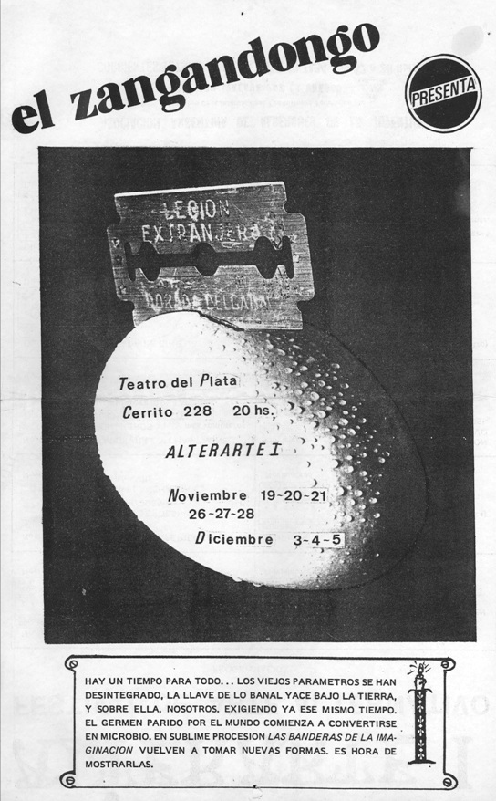
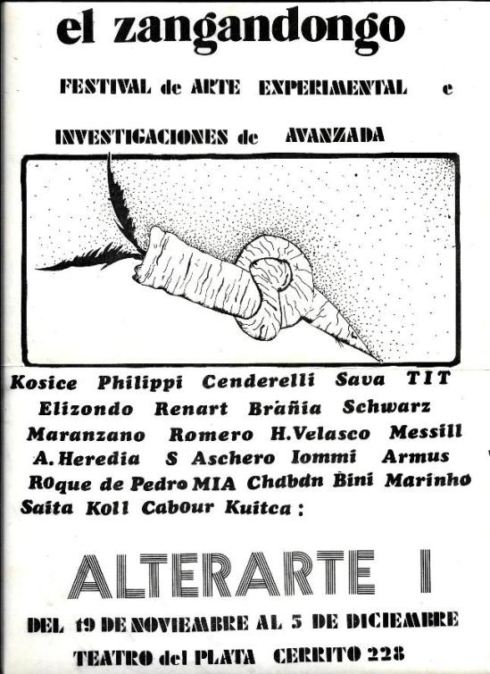
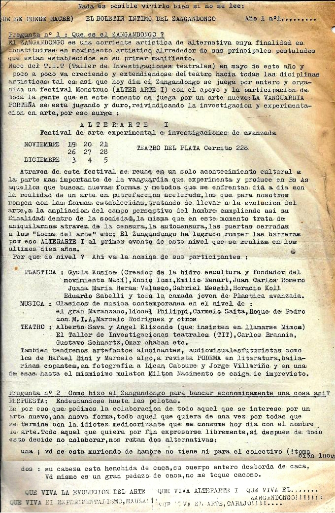
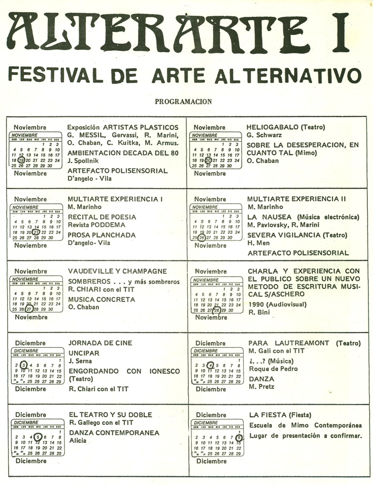
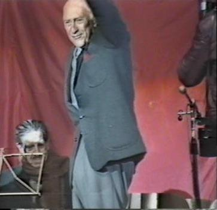
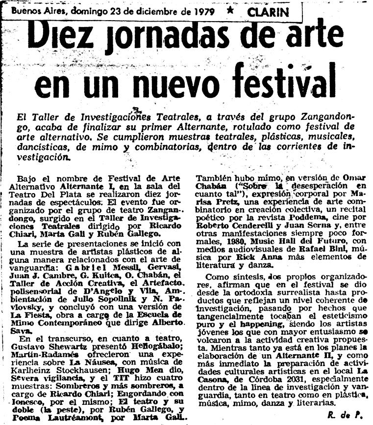

| | Alterarte I A fines de 1979 el TiT y el Zangandongo organizaron el ciclo Alterarte I en
el Teatro del Plata, en pleno centro de Buenos Aires, a pocas cuadras de la Casa
Rosada donde la Junta Militar supervisaba cotidianamente su genocidio. El nombre
tenía un doble sentido: por un lado era la combinación de las palabras Arte
Alternativo (alternativo al arte comercial, al arte complaciente), y por otro
era una conjugación del verbo alterar, que era lo que buscaban sus
organizadores (por ejemplo, alterar el orden, alterar el arte). En cierta forma,
fue como gritarle al General Videla: "¡Queremos
alterarte!". Los objetivos eran desafiar el Estado de Sitio, crear un
espacio para que jóvenes artistas se expresaran y mostraran sus trabajos, y
aglutinar artistas para luchar contra la censura. Fue el primer festival de este
tipo bajo la dictadura.
  
Boletín "íntimo" del Zangandongo, presentándose y presentando el
festival.

En el marco de Alterarte I los 3 grupos del TiT mostraron sus trabajos:
el Grupo de Gallego “El teatro y su doble” (basado en el libro homónimo de
Artaud, especialmente en su capítulo “El teatro y la peste”), el Grupo de Marta “Para
Lautreamont” y el Grupo de Ricardo “Engordando con Ionesco” y
“Vaudeville champagne (Sombreros... y más sombreros)”. También en teatro
mostraron Gustavo Schwarz ("Heliogábalo", de Artaud), Martín
Pavlovsky y Radamés Marini con un bloque que finalizaba en un simulacro de
secuestro por parte de servicios parapoliciales (erróneamente presentado en la
programación como una muestra musical), Alberto Sava y su EMC (Escuela
de Mimo Contemporánea), Omar Chabán, y Hugo Men.
En música mostraron Roque de
Pedro, y, aunque no aparece en el programa, Rick Anna (ejecutó música ambient con
guitarra eléctrica; había sido alumno de Robert Fripp, guitarrista de King
Crimson).
El día de la presentación del Grupo de Gallego el teatro
se inundó por una pérdida. Los actores sacaron todo el agua que pudieron, pero el piso
alfombrado quedó muy húmedo y en algunas partes directamente mojado. Al
entrar los espectadores, como se habían sacado las sillas (por decisión
teatral, no por el agua), cada uno debía optar: o quedarse parado o
mojarse el trasero. Evidentemente algunos ya conocían al TiT y pudieron
pensar que el agua fue puesta a propósito; por lo bajo se escuchó un
comentario entre ellos: "Estos del TiT ya no saben qué inventar
para provocar a la gente".
|
 El día de cierre del festival hablaron varios artistas y por
último el Dr. Enrique Broquen, uno de los pocos abogados de presos políticos
en esos años (el año anterior también había asumido la defensa de Juan
Uviedo), para referirse a la lucha por los derechos humanos bajo la
dictadura. Dijo al comienzo de su
alocución: “Vengo a traer la voz de los que no tienen voz”.
(izquierda: Broquen saludando en un acto político).
|
|  Nota en diario Clarín
sobre el festival. |
Fotos: escenas de "Para Lautreamont" 
 


|